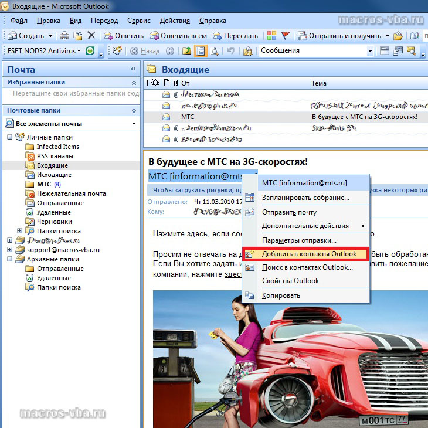

Как добавить отправителя письма в контакты Outlook
Подробности
Категория: Макросы Outlook
Опубликовано: 10 июня 2013
При получении письма в Microsoft Outlook, можно добавить отправителя этого письма в контакты (в адресную книгу). Сделать это можно разными способами, как при помощи стандартных средств Outlook, так и программно, при помощи макроса VBA для Outlook.
Как добавить отправителя письма в контакты Outlook 2007 стандартными средствами?
Для того чтобы добавить отправителя письма в контакты Outlook стандартными средствами приложения, необходимо выбрать письмо, затем правой кнопкой мыши кликнуть на имени отправителя в области чтения и из контекстного меню выбрать пункт "Добавить в контакты Outlook".

Добавление отправителей писем в контакты макросом Outlook
При помощи макроса VBA для Outlook можно всех отправителей писем из заданной папки добавить в контакты (в адресную книгу Outlook). Ниже приводится листинг макроса, перебирающего все письма в заданной папке и добавляющего отправителей этих писем в контакты, предварительно разделив полное имя отправителя письма на имя, отчество и фамилию. Если в указанной папке с входящими письмами от одного отправителя есть несколько писем, то макрос создаст дубликаты контактов. Как удалить дубликаты контактов - тема для отдельного разговора.
Option Explicit
Sub Dobavlenie_otpraviteley_pisem_v_kontakty()
'макрос перебирает все письма из папки "Входящие"
'и добавляет отправителей писем в контакты
Dim myOutlook As New Outlook.Application
Dim myNamespace As Outlook.NameSpace
Dim myFolder As MAPIFolder
Dim myMailMsgs As Outlook.Items
Dim MailMsg As Object
Dim NewContact As ContactItem
Dim iSenderName As String
Dim iEmail As String
Dim iFirstName As String
Dim iMiddleName As String
Dim iLastName As String
Dim vhod1 As Integer
Dim vhod2 As Integer
Set myNamespace = myOutlook.GetNamespace("MAPI")
Set myFolder = myNamespace.Folders("Личные папки")
'имя папки верхнего уровня
Set myMailMsgs = myFolder.Folders("Входящие").Items
'имя дочерней папки
On Error Resume Next
For Each MailMsg In myMailMsgs
iSenderName = MailMsg.SenderName
iEmail = MailMsg.SenderEmailAddress
vhod1 = InStr(iSenderName, " ")
vhod2 = InStrRev(iSenderName, " ")
iFirstName = Left(iSenderName, vhod1)
iLastName = Right(iSenderName, Len(iSenderName) - vhod2)
iMiddleName = Mid(iSenderName, vhod1, vhod2 - vhod1)
Set NewContact = myOutlook.CreateItem(olContactItem)
With NewContact
.Email1Address = iEmail
.FirstName = iFirstName
.LastName = iLastName
.MiddleName = iMiddleName
.Save
End With
Next MailMsg
Set myOutlook = Nothing
End Sub
Для того, чтобы перенести этот программный код на свой компьютер, наведите курсор мыши на поле с программным кодом, нажмите на одну из двух кнопкок  в правом верхнем углу этого поля, скопируйте программный код и вставьте его в модуль проекта на своем компьютере (подробнее о том, как сохранить программный код макроса).
в правом верхнем углу этого поля, скопируйте программный код и вставьте его в модуль проекта на своем компьютере (подробнее о том, как сохранить программный код макроса).
Другие материалы по теме: